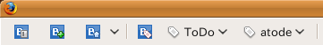
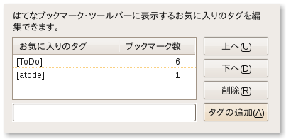

@github@github
@github@github本家からフォークして機能追加したもの

ツールバーに「お気に入りのタグ」が追加されます。
「タグリストの編集」ボタンを押下すると以下のような編集ウィンドウが開きます。

下部のテキストボックスに[ToDo]などと入力し、
「タグの追加」ボタンでリストに追加できます。
タグは[foo][bar]などと複数指定でき、全てのタグを持つブックマークに絞ることが可能です。
ビルドするにはRakeというRubyで作られたMakeツールを使用します。
$ git clone http://github.com/teramako/hatena-bookmark-xul.git
$ cd hatena-bokmark-xul
$ rake
(in /home/teramako/var/hatena-bookmark-xul)
mkdir -p build/hatenabookmark/chrome
cp install.rdf build/hatenabookmark/install.rdf
cp -r defaults build/hatenabookmark/defaults
cp -r resources build/hatenabookmark/resources
cp -r searchplugins build/hatenabookmark/searchplugins
cp -r chrome build/hatenabookmark/
cd build/hatenabookmark && (find -type f -regex '.+\.sw[po]$' -exec rm {} \;) ; zip -qr -9 ../../xpi/hatenabookmark-1.1.8.xpi *
rm -rf build
ビルドできると、./xpiディレクトリにXPIファイルが作成されます。それをドラッグ&ドロップ等でFirefoxに渡してあげればインストール可能です。